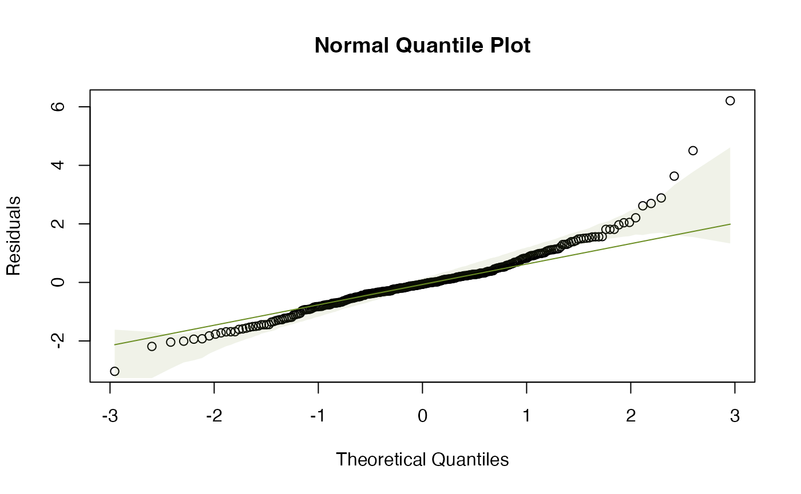

Chapter 4 -- Linear models -- anything goes -- Exercise solutions and Code Boxes
David Warton
2022-07-12
Chapter4Solutions.RmdExercise 4.1: Ravens and gunshots
We assume:
- that we have a random sample of paired differences (most importantly, paired differences are independent of each other)
- the paired differences are approixmately normal.
library(ecostats)
#> Loading required package: mvabund
data(ravens)
qqenvelope(ravens$delta[ravens$treatment==1])
This looks OK, there is no evidence against normality here
Code Box 4.1: Paired t-test for the ravens data
data(ravens)
crowGun = ravens[ravens$treatment == 1,]
t.test(crowGun$Before, crowGun$After, paired=TRUE, alternative="less")
#>
#> Paired t-test
#>
#> data: crowGun$Before and crowGun$After
#> t = -2.6, df = 11, p-value = 0.01235
#> alternative hypothesis: true difference in means is less than 0
#> 95 percent confidence interval:
#> -Inf -0.335048
#> sample estimates:
#> mean of the differences
#> -1.083333There is some evidence that ravens fly towards the sound of gunshots.
Exercise 4.2: Ravens, guns and air horns
Is there evidence that the response to gunshot different to response to other treatments?
We will use a linear model, with location included as a
blocking factor to control for differences in raven abundance from one
place to another, see Code Box 4.3.
Code Box 4.2: Paired t-test for the ravens data via a linear model
library(reshape2)
crowLong = melt(crowGun,measure.vars = c("Before","After"),
variable.name="time",value.name="ravens")
head(crowLong)
#> delta site treatment trees time ravens
#> 1 2 pilgrim 1 1 Before 0
#> 2 1 pacific 1 1 Before 0
#> 3 4 uhl hil 1 1 Before 0
#> 4 1 wolff r 1 1 Before 0
#> 5 0 teton p 1 1 Before 0
#> 6 3 glacier 1 1 Before 2
ravenlm = lm(ravens~site+time,data=crowLong)
anova(ravenlm)
#> Analysis of Variance Table
#>
#> Response: ravens
#> Df Sum Sq Mean Sq F value Pr(>F)
#> site 11 55.458 5.0417 4.84 0.007294 **
#> time 1 7.042 7.0417 6.76 0.024694 *
#> Residuals 11 11.458 1.0417
#> ---
#> Signif. codes: 0 '***' 0.001 '**' 0.01 '*' 0.05 '.' 0.1 ' ' 1Code Box 4.3: A linear model for the blocked design given by the raven counts in Exercise 4.2
To analyse, we first subset to the three treatments of interest (1=gunshot, 2=airhorn, 3=whistle):
crowAfter = ravens[ravens$treatment <=3,]
ft_crowAfter = lm(After~site+treatment,data=crowAfter)
anova(ft_crowAfter)
#> Analysis of Variance Table
#>
#> Response: After
#> Df Sum Sq Mean Sq F value Pr(>F)
#> site 11 28.667 2.6061 0.9269 0.5327
#> treatment 1 2.667 2.6667 0.9485 0.3402
#> Residuals 23 64.667 2.8116To check assumptions we could look at diagnostic plots:
par(mfrow=c(1,2),mar=c(3,3,1,1),mgp=c(1.75,0.75,0))
plotenvelope(ft_crowAfter)
The residual vs fits plot has a fan-shaped pattern, suggesting that transformation might be a good idea here!
Exercise 4.3: Seaweed, snails and seaweed mass
Is there an effect of distance of isolation after controlling for wet mass?
Q’s – this is a hypothesis test, for an effect on
Total of Dist after controlling for
Wmass.
P’s We have three variables of interest:
-
Totalis the quantitative response -
Distis a factor (0, 2 or 10) -
Wmassis a quantitative variable, to be use as a covariate
We can get all three variables onto the same graph using a scatterplot, with different colours for different treatment levels, as in Code Box 4.4.
Code Box 4.4: Scatterplot of data from Exercise 4.3.
data(seaweed)
seaweed$Dist = factor(seaweed$Dist)
plot(Total~Wmass, data=seaweed, col=Dist,
xlab="Wet Mass [log scale]",ylab="Density (per gram) [log scale]")
legend("topright",levels(seaweed$Dist),col=1:3,pch=1)
Code Box 4.5: Analysis of covariance for the seaweed data of Exercise 4.3.
seaweed$logTot = log(seaweed$Total)
seaweed$logWmass = log(seaweed$Wmass)
lmMassDist=lm(logTot~logWmass+Dist,data=seaweed)
anova(lmMassDist)
#> Analysis of Variance Table
#>
#> Response: logTot
#> Df Sum Sq Mean Sq F value Pr(>F)
#> logWmass 1 7.7216 7.7216 35.7165 1.975e-07 ***
#> Dist 2 2.1415 1.0708 4.9528 0.01067 *
#> Residuals 53 11.4582 0.2162
#> ---
#> Signif. codes: 0 '***' 0.001 '**' 0.01 '*' 0.05 '.' 0.1 ' ' 1Exercise 4.4: Checking ANCOVA assumptions
Independence can be guaranteed by randomly allocating
Dist treatments to plots.
Remaining assumptions can be checked using diagnostic plots.
par(mfrow=c(1,2),mar=c(3,3,1,1),mgp=c(1.75,0.75,0))
plotenvelope(lmMassDist, n.sim=99)
(Note that plotenvelope was run with just
99 iterations, to speed up computation time.)
- normality - normal quantile plot is close to a straight line so this is OK
- equal variance - no fan shape on residual vs fits plot so this seems OK
- linearity – no U-shape on residual vs fits plot so this seems OK
Code Box 4.6: ANCOVA with the order of terms switched.
Notice that switching the order changes the results in the ANOVA table, and their interpretation.
lmDistMass=lm(logTot~Dist+logWmass,data=seaweed)
anova(lmDistMass)
#> Analysis of Variance Table
#>
#> Response: logTot
#> Df Sum Sq Mean Sq F value Pr(>F)
#> Dist 2 4.8786 2.4393 11.283 8.273e-05 ***
#> logWmass 1 4.9845 4.9845 23.056 1.329e-05 ***
#> Residuals 53 11.4582 0.2162
#> ---
#> Signif. codes: 0 '***' 0.001 '**' 0.01 '*' 0.05 '.' 0.1 ' ' 1Exercise 4.5: Order of terms in writing out a model for snails and seaweed.
The correct model is ...logWmass+Dist so we can look for
an effect of Dist after controlling for
logWmass.
Code Box 4.7: “Type II sums of squares” for the ANCOVA of snails and seaweed.
drop1(lmMassDist,test="F")
#> Single term deletions
#>
#> Model:
#> logTot ~ logWmass + Dist
#> Df Sum of Sq RSS AIC F value Pr(>F)
#> <none> 11.458 -83.448
#> logWmass 1 4.9845 16.443 -64.861 23.0561 1.329e-05 ***
#> Dist 2 2.1415 13.600 -77.681 4.9528 0.01067 *
#> ---
#> Signif. codes: 0 '***' 0.001 '**' 0.01 '*' 0.05 '.' 0.1 ' ' 1Exercise 4.6: Snails, isolation and time
Q’s – here is the research question: Does invertebrate density change with isolation? Does the isolation effect vary with time period?
We want to test a specific hypothesis (no effect of
Dist, no interaction of Dist with
Time).
P’s There are three variables involved in this research question:
-
Totalis invertebrate density (quantitative) -
Distis a factor (0, 2 or 10) -
Timeis also a factor (5 or 10 weeks)
Given previous information we could also add logWmass as
another covariate…
Comparative boxplots would be a good way to start, as in Code Box 4.8.
Code Box 4.8: A comparative boxplot of snail density at each of the six possible combinations of sampling time and distance of isolation.
plot(Total ~ interaction(Dist,Time), data=seaweed, log="y") ## and as usual use xlabel, ylabel to name axes
Exercise 4.7: Factorial ANOVA assumptions
par(mfrow=c(1,2),mar=c(3,3,1,1),mgp=c(1.75,0.75,0))
ft_seaweedFact=lm(logTot~Time*Dist, data=seaweed)
plotenvelope(ft_seaweedFact, n.sim=99)
(Note that plotenvelope was run with just
99 iterations, to speed up computation time.)
- independence: if plots were randomly allocated to treatments then this will be satisfied
- normality: the normal quantile plot is close to a straight line so this looks OK
- equal variance: no fan-shape on the residual vs fits plot so this looks OK There is no linearity/additivity assumption in a factorial ANOVA
Code Box 4.9: Factorial ANOVA of Snails, Isolation, and Time
ft_seaweedFact = lm(logTot~Time*Dist,data=seaweed)
anova(ft_seaweedFact)
#> Analysis of Variance Table
#>
#> Response: logTot
#> Df Sum Sq Mean Sq F value Pr(>F)
#> Time 1 0.2433 0.24333 0.8512 0.3605470
#> Dist 2 5.0323 2.51613 8.8023 0.0005201 ***
#> Time:Dist 2 1.4673 0.73367 2.5666 0.0866804 .
#> Residuals 51 14.5784 0.28585
#> ---
#> Signif. codes: 0 '***' 0.001 '**' 0.01 '*' 0.05 '.' 0.1 ' ' 1There is marginal evidence of an interaction and strong evidence of a
Dist main effect. So there is an effect of
Dist and it could potentially vary with
Time.
Note we used Time*Dist because Time is not
the variable of primary interest, it is Dist, and we only
include Time to control for sampling time effects
Code Box 4.10: R code for the interaction plot in Figure 4.1.
library(dplyr)
#>
#> Attaching package: 'dplyr'
#> The following objects are masked from 'package:stats':
#>
#> filter, lag
#> The following objects are masked from 'package:base':
#>
#> intersect, setdiff, setequal, union
seaweed$Time = as.factor(seaweed$Time)
by_DistTime = group_by(seaweed,Dist,Time)
distTimeMeans = summarise(by_DistTime, logTotal=mean(log(Total)))
#> `summarise()` has grouped output by 'Dist'. You can override using the
#> `.groups` argument.
distTimeMeans
#> # A tibble: 6 × 3
#> # Groups: Dist [3]
#> Dist Time logTotal
#> <fct> <fct> <dbl>
#> 1 0 5 1.58
#> 2 0 10 1.31
#> 3 2 5 2.01
#> 4 2 10 2.36
#> 5 10 5 1.68
#> 6 10 10 2.13
library(ggplot2)
library(ggthemes) #loads special themes
ggplot(seaweed, aes(x = factor(Dist), y = Total, colour = Time)) +
geom_point() + geom_line(data = distTimeMeans, aes(y = exp(logTotal),
group = Time)) + theme_few() + xlab("Distance of Isolation") +
ylab("Total abundance [log scale]") + scale_y_log10(breaks=c(2,5,10,20))
Alternatively, for a simpler plot without the data points on it, try:
interaction.plot(seaweed$Dist, seaweed$Time, ft_seaweedFact$fitted,
xlab="Isolation of patch", ylab="Total density [log]", trace.label="Time")
Code Box 4.11: Uh oh… anova gone wrong
data(seaweed)
ft_nofactor=lm(log(Total)~Time*Dist,data=seaweed)
anova(ft_nofactor)
#> Analysis of Variance Table
#>
#> Response: log(Total)
#> Df Sum Sq Mean Sq F value Pr(>F)
#> Time 1 0.2433 0.24333 0.6671 0.41771
#> Dist 1 0.7164 0.71635 1.9640 0.16691
#> Time:Dist 1 1.0303 1.03031 2.8248 0.09871 .
#> Residuals 53 19.3313 0.36474
#> ---
#> Signif. codes: 0 '***' 0.001 '**' 0.01 '*' 0.05 '.' 0.1 ' ' 1Code Box 4.12: Tukey’s comparisons don’t work for main eects in an orthogonal design, as seen for Exercise 4.9:
seaweed$Dist = factor(seaweed$Dist)
seaweed$Time = factor(seaweed$Time)
seaweed$logTot = log(seaweed$Total)
ft_seaweedFact = lm(logTot~Time*Dist, data=seaweed)
library(multcomp)
#> Loading required package: mvtnorm
#> Loading required package: survival
#> Loading required package: TH.data
#> Loading required package: MASS
#>
#> Attaching package: 'MASS'
#> The following object is masked from 'package:dplyr':
#>
#> select
#>
#> Attaching package: 'TH.data'
#> The following object is masked from 'package:MASS':
#>
#> geyser
contFact = mcp(Dist="Tukey") # telling R to compare on the Dist factor
compFact = glht(ft_seaweedFact, linfct=contFact) # run multiple comparisions
#> Warning in mcp2matrix(model, linfct = linfct): covariate interactions found --
#> default contrast might be inappropriateCode Box 4.13: Tukey’s comparisons for a main eect of Dist for Exercise 4.6, assuming no interaction.
ft_seaweedMain=lm(logTot~Time+Dist,data=seaweed) # note it is + not *
contrast = mcp(Dist="Tukey") # telling R to compare on the Dist factor
compDistMain = glht(ft_seaweedMain, linfct=contrast)
confint(compDistMain)
#>
#> Simultaneous Confidence Intervals
#>
#> Multiple Comparisons of Means: Tukey Contrasts
#>
#>
#> Fit: lm(formula = logTot ~ Time + Dist, data = seaweed)
#>
#> Quantile = 2.4112
#> 95% family-wise confidence level
#>
#>
#> Linear Hypotheses:
#> Estimate lwr upr
#> 2 - 0 == 0 0.72650 0.28772 1.16527
#> 10 - 0 == 0 0.45838 0.03883 0.87793
#> 10 - 2 == 0 -0.26812 -0.70689 0.17066Code Box 4.14: Tukey’s comparisons for all possible treatment combinations for Exercise 4.6.
This approach is wasteful as it compares some pairs we are not interested in (e.g. 2.10 vs 0.5).
td = interaction(seaweed$Dist,seaweed$Time)
ft_seaweedInt=lm(logTot~td,data=seaweed) # Time*Dist as a single term
contInt = mcp(td="Tukey") # telling R to compare on all Time*Dist levels
compDistInt = glht(ft_seaweedInt, linfct=contInt)
summary(compDistInt)
#>
#> Simultaneous Tests for General Linear Hypotheses
#>
#> Multiple Comparisons of Means: Tukey Contrasts
#>
#>
#> Fit: lm(formula = logTot ~ td, data = seaweed)
#>
#> Linear Hypotheses:
#> Estimate Std. Error t value Pr(>|t|)
#> 2.5 - 0.5 == 0 0.4356 0.2391 1.822 0.46038
#> 10.5 - 0.5 == 0 0.1013 0.2391 0.424 0.99815
#> 0.10 - 0.5 == 0 -0.2643 0.2391 -1.105 0.87659
#> 2.10 - 0.5 == 0 0.7852 0.2635 2.980 0.04756 *
#> 10.10 - 0.5 == 0 0.5512 0.2391 2.305 0.21046
#> 10.5 - 2.5 == 0 -0.3343 0.2391 -1.398 0.72726
#> 0.10 - 2.5 == 0 -0.6999 0.2391 -2.927 0.05411 .
#> 2.10 - 2.5 == 0 0.3496 0.2635 1.327 0.76838
#> 10.10 - 2.5 == 0 0.1156 0.2391 0.483 0.99654
#> 0.10 - 10.5 == 0 -0.3656 0.2391 -1.529 0.64689
#> 2.10 - 10.5 == 0 0.6839 0.2635 2.596 0.11665
#> 10.10 - 10.5 == 0 0.4499 0.2391 1.882 0.42411
#> 2.10 - 0.10 == 0 1.0495 0.2635 3.983 0.00282 **
#> 10.10 - 0.10 == 0 0.8155 0.2391 3.411 0.01526 *
#> 10.10 - 2.10 == 0 -0.2340 0.2635 -0.888 0.94749
#> ---
#> Signif. codes: 0 '***' 0.001 '**' 0.01 '*' 0.05 '.' 0.1 ' ' 1
#> (Adjusted p values reported -- single-step method)Code Box 4.15: Tukey’s comparisons for Dist within each sampling time, for Exercise 4.6.
This is the best approach to use if you think there is an interaction and are primarily interested in Dist.
levels(seaweed$Time) = c("five","ten") #need non-numbers for mcp to work
levels(seaweed$Dist) = c("Zero","Two","Ten")
td = interaction(seaweed$Dist,seaweed$Time)
ft_seaweedInt=lm(log(Total)~td,data=seaweed) # Time*Dist as a single term
contDistinTime = mcp(td = c("Two.five - Zero.five = 0",
"Ten.five - Zero.five = 0",
"Ten.five - Two.five = 0",
"Two.ten - Zero.ten = 0",
"Ten.ten - Zero.ten = 0",
"Ten.ten - Two.ten = 0"))
compDistinTime = glht(ft_seaweedInt, linfct=contDistinTime)
summary(compDistinTime)
#>
#> Simultaneous Tests for General Linear Hypotheses
#>
#> Multiple Comparisons of Means: User-defined Contrasts
#>
#>
#> Fit: lm(formula = log(Total) ~ td, data = seaweed)
#>
#> Linear Hypotheses:
#> Estimate Std. Error t value Pr(>|t|)
#> Two.five - Zero.five == 0 0.4356 0.2391 1.822 0.31168
#> Ten.five - Zero.five == 0 0.1013 0.2391 0.424 0.99083
#> Ten.five - Two.five == 0 -0.3343 0.2391 -1.398 0.57121
#> Two.ten - Zero.ten == 0 1.0495 0.2635 3.983 0.00126 **
#> Ten.ten - Zero.ten == 0 0.8155 0.2391 3.411 0.00712 **
#> Ten.ten - Two.ten == 0 -0.2340 0.2635 -0.888 0.87446
#> ---
#> Signif. codes: 0 '***' 0.001 '**' 0.01 '*' 0.05 '.' 0.1 ' ' 1
#> (Adjusted p values reported -- single-step method)Code Box 4.16: Testing for an interaction in an ANCOVA for density of epifauna as a function of Dist and algal wet mass.
lmMassDistInter=lm(logTot~log(Wmass)*Dist,data=seaweed)
anova(lmMassDistInter)
#> Analysis of Variance Table
#>
#> Response: logTot
#> Df Sum Sq Mean Sq F value Pr(>F)
#> log(Wmass) 1 7.7216 7.7216 35.3587 2.489e-07 ***
#> Dist 2 2.1415 1.0708 4.9032 0.01128 *
#> log(Wmass):Dist 2 0.3208 0.1604 0.7345 0.48475
#> Residuals 51 11.1374 0.2184
#> ---
#> Signif. codes: 0 '***' 0.001 '**' 0.01 '*' 0.05 '.' 0.1 ' ' 1Exercise 4.8: Global plant height
Do the effects on plant height of latitude and rainfall interact?
We need an interaction term in the model, but because
lat and rain are both quantitative, this is a
quadratic term and other quadratic terms should enter the model too, as
in Code Box 4.17.
Code Box 4.17: Using R to fit a quadratic model to the plant height data of Exercise 3.1.
ft_latRain2 = lm(log(height)~poly(rain,lat,degree=2),data=globalPlants)
summary(ft_latRain2)
#>
#> Call:
#> lm(formula = log(height) ~ poly(rain, lat, degree = 2), data = globalPlants)
#>
#> Residuals:
#> Min 1Q Median 3Q Max
#> -3.3656 -0.9546 -0.0749 0.9775 3.1311
#>
#> Coefficients:
#> Estimate Std. Error t value Pr(>|t|)
#> (Intercept) 1.1675 0.2094 5.577 1.44e-07 ***
#> poly(rain, lat, degree = 2)1.0 5.7178 2.3419 2.441 0.01603 *
#> poly(rain, lat, degree = 2)2.0 -1.1417 2.0304 -0.562 0.57493
#> poly(rain, lat, degree = 2)0.1 -5.0623 1.8212 -2.780 0.00628 **
#> poly(rain, lat, degree = 2)1.1 -6.1984 38.1037 -0.163 0.87104
#> poly(rain, lat, degree = 2)0.2 -2.3615 2.5031 -0.943 0.34729
#> ---
#> Signif. codes: 0 '***' 0.001 '**' 0.01 '*' 0.05 '.' 0.1 ' ' 1
#>
#> Residual standard error: 1.441 on 125 degrees of freedom
#> Multiple R-squared: 0.2706, Adjusted R-squared: 0.2415
#> F-statistic: 9.277 on 5 and 125 DF, p-value: 1.558e-07Exercise 4.9: Snowmelt and time to flowering
Does time from snowmelt to flowering vary with snowmelt date, beyond that explained by elevation? If so, how does it vary?
The data are available as snowmelt in the ecostats package, averaged over measurements taken at three sampling times. Answer the research questions using the appropriate linear model, being sure to check your assumptions.

snowReduced = na.omit(snowmelt[,c("flow","snow","elev")]) #this line not normally needed, lm can handle NA's, but seems needed because of a weird conflict with MCMCglmm
ft_snow = lm(flow~elev+snow, data=snowReduced)
plotenvelope(ft_snow, n.sim=99)
(Note that plotenvelope was run with just
99 iterations, to speed up computation time.)
This doesn’t look great, there is the occasional large value for flowering time, and a suggestion of non-linearity (note from the scatterplot that at early snowmelt dates there is a strong decreasing relationship, but it can’t continue to increase at the same rate because then flowering time would become negative). Try log-transforming flowering time…
plot(flow~snow,data=snowmelt,log="y")
#> Warning in xy.coords(x, y, xlabel, ylabel, log): 1 y value <= 0 omitted from
#> logarithmic plot
snowReduced$logFlow = log(snowReduced$flow)
snowReduced2 = snowReduced[snowReduced$logFlow>-Inf,] # look it's a bit naughty, removing the infinite value, but no biggie as only one value
ft_logsnow = lm(logFlow~elev+snow, data=snowReduced2)
plotenvelope(ft_logsnow, n.sim=99)

summary(ft_logsnow)
#>
#> Call:
#> lm(formula = logFlow ~ elev + snow, data = snowReduced2)
#>
#> Residuals:
#> Min 1Q Median 3Q Max
#> -0.90161 -0.15794 0.02338 0.15834 1.08662
#>
#> Coefficients:
#> Estimate Std. Error t value Pr(>|t|)
#> (Intercept) 3.8805208 0.3193019 12.153 < 2e-16 ***
#> elev 0.0003357 0.0001226 2.739 0.00651 **
#> snow -0.0103172 0.0007551 -13.663 < 2e-16 ***
#> ---
#> Signif. codes: 0 '***' 0.001 '**' 0.01 '*' 0.05 '.' 0.1 ' ' 1
#>
#> Residual standard error: 0.2909 on 316 degrees of freedom
#> Multiple R-squared: 0.3774, Adjusted R-squared: 0.3735
#> F-statistic: 95.78 on 2 and 316 DF, p-value: < 2.2e-16
confint(ft_logsnow)
#> 2.5 % 97.5 %
#> (Intercept) 3.252294e+00 4.5087472418
#> elev 9.457986e-05 0.0005768232
#> snow -1.180299e-02 -0.0088315037(Note that plotenvelope was run with just
99 iterations, to speed up computation time.)
So as snowmelt date increases by 10 days, log(flowering time) decreases by between 0.12 and 0.09 (meaning about a 9-12% decrease).
(Aside: Strictly speaking, snow should not be treated as
a linear variable because it is a time-of-year variable, so is a
cyclical variable with a period of 365. But in this case the values are
all focussed over a few months towards the middle of the year so a
linear approximation is OK.)
Exercise 4.10: Bird exclusion and biological control
Is there an effect of the netting treatment on changes in aphid numbers across the sampling times?
data(aphidsBACI)
str(aphidsBACI)
#> 'data.frame': 16 obs. of 5 variables:
#> $ Plot : Factor w/ 8 levels "1","2","3","4",..: 1 2 3 4 5 6 7 8 1 2 ...
#> $ Treatment: Factor w/ 2 levels "excluded","present": 2 2 2 2 1 1 1 1 2 2 ...
#> $ Time : Factor w/ 2 levels "X18.06.","X15.07.": 1 1 1 1 1 1 1 1 2 2 ...
#> $ counts : int 78 71 122 271 119 152 120 202 60 48 ...
#> $ logcount : num 4.37 4.28 4.81 5.61 4.79 ...
plot(logcount~interaction(Time,Treatment),data=aphidsBACI)
OK log(count) looks fine, different treatments have similar variation. Eyeballing the data it looks like there is a treatment effect, with many less aphids in the excluded group than in the control…
When building a model, we need to take into account the pairing of
the data – Ingo and friends took repeated measures in each plot, so we
include Plot as a blocking variable to account for this.
This in turn means there is no need for a Treatment main
effect, because different plots received different treatments.
par(mfrow=c(1,3),mar=c(3,3,1,1),mgp=c(1.75,0.75,0))
lm_aphids = lm(logcount~Plot+Time+Treatment:Time,data=aphidsBACI)
plotenvelope(lm_aphids,which=1:3, n.sim=99)
(Note that plotenvelope was run with just
99 iterations, to speed up computation time.)
This all looks fine to me. The term if interest is
Treatment:Time, which tells us if changes in aphids over
time varied due to the bird exclusion treatment:
anova(lm_aphids)
#> Analysis of Variance Table
#>
#> Response: logcount
#> Df Sum Sq Mean Sq F value Pr(>F)
#> Plot 7 0.8986 0.1284 0.4603 0.833357
#> Time 1 5.4675 5.4675 19.6038 0.004434 **
#> Time:Treatment 1 0.7397 0.7397 2.6522 0.154527
#> Residuals 6 1.6734 0.2789
#> ---
#> Signif. codes: 0 '***' 0.001 '**' 0.01 '*' 0.05 '.' 0.1 ' ' 1There is no evidence of an interaction, meaning there is no evidence of an effect of bird exclusion on aphid numbers. Oh :(
I guess the reason for this is that the levels of replication were low – there were only eight plots, four in each treatment, so an effect would have to be very strong to be statistically significant.
Exercise 4.11: Seaweed, snails and three factors
data(seaweed)
str(seaweed)
#> 'data.frame': 57 obs. of 22 variables:
#> $ Size : chr "SMALL" "SMALL" "SMALL" "SMALL" ...
#> $ Dist : int 0 0 0 0 0 2 2 2 2 2 ...
#> $ Time : int 5 5 5 5 5 5 5 5 5 5 ...
#> $ Rep : int 1 2 3 4 5 1 2 3 4 5 ...
#> $ Wmass : num 15.8 13.1 25.1 29.7 17.4 13.3 4.7 6.8 7.7 14.3 ...
#> $ Amph : num 75 16 14 21 55 17 9 11 28 37 ...
#> $ Cope : num 0 7 37 37 0 14 6 29 21 83 ...
#> $ Poly : num 17 8 2 5 1 2 1 3 6 10 ...
#> $ Anem : num 2 0 0 0 0 0 0 1 0 0 ...
#> $ Iso : num 0 2 1 1 15 0 12 51 19 56 ...
#> $ Bival : num 3 2 1 0 0 2 0 4 3 0 ...
#> $ Gast : num 6 18 33 9 9 1 10 7 4 15 ...
#> $ Turb : num 1 0 0 0 0 0 0 0 0 0 ...
#> $ Prawn : num 0 0 0 0 5 1 0 0 0 1 ...
#> $ Urchin: num 0 0 0 0 0 0 0 0 0 0 ...
#> $ Fish : num 0 0 0 0 1 0 0 0 0 0 ...
#> $ Crab : num 0 1 1 0 0 0 0 1 0 0 ...
#> $ Caddis: num 0 0 0 0 1 0 0 0 0 0 ...
#> $ Opi : num 0 1 0 1 0 0 0 0 0 0 ...
#> $ Ost : num 0 0 6 3 0 0 1 1 0 11 ...
#> $ Bstar : num 0 0 0 0 0 0 0 0 0 1 ...
#> $ Total : num 6.58 4.2 3.78 2.59 5 ...
seaweed$logTot = log(seaweed$Total)
seaweed$Dist = factor(seaweed$Dist)
par(mar=c(4,7,1,1))
plot(logTot~interaction(Dist,Size,Time),data=seaweed,xlab="",ylab="Total abundance [log scale]",horizontal=TRUE,col=2:4,las=1)
legend("topleft",legend=paste0("Dist=",levels(seaweed$Dist)),pch=15,col=2:4,pt.cex=2)
All good so far, no obvious trend, except that Dist=0
seems to have lower total abundance at most times/sizes. Will analyse as
a three-way ANOVA
par(mfrow=c(1,3),mar=c(3,3,1,1),mgp=c(1.75,0.75,0))
ft_seaweed3 = lm(log(Total)~Size*Time*Dist,data=seaweed)
plotenvelope(ft_seaweed3,which=1:3, n.sim=99)
anova(ft_seaweed3)
#> Analysis of Variance Table
#>
#> Response: log(Total)
#> Df Sum Sq Mean Sq F value Pr(>F)
#> Size 1 0.9940 0.99399 3.5849 0.0647472 .
#> Time 1 0.1923 0.19234 0.6937 0.4093064
#> Dist 2 4.7737 2.38686 8.6084 0.0006829 ***
#> Size:Time 1 0.0605 0.06055 0.2184 0.6425429
#> Size:Dist 2 0.1800 0.09000 0.3246 0.7244968
#> Time:Dist 2 1.4117 0.70583 2.5456 0.0896686 .
#> Size:Time:Dist 2 1.2318 0.61592 2.2214 0.1202189
#> Residuals 45 12.4772 0.27727
#> ---
#> Signif. codes: 0 '***' 0.001 '**' 0.01 '*' 0.05 '.' 0.1 ' ' 1(Note that plotenvelope was run with just
99 iterations, to speed up computation time.)
From the plots, we can’t see any problems with assumptions.
The ANOVA suggests a main effect of Dist, with marginal
evidence of an interaction with Time (judging from the
boxplots, this is probably because of the larger values for
logTot at Time=5 in large plots).
We could reanalyse the data including Wmass as a
covariate, for a three-factor ANCOVA:
ft_seaweedW3 = lm(logTot~Wmass*Size*Time*Dist,data=seaweed)
anova(ft_seaweedW3)
#> Analysis of Variance Table
#>
#> Response: logTot
#> Df Sum Sq Mean Sq F value Pr(>F)
#> Wmass 1 6.7793 6.7793 28.2266 7.328e-06 ***
#> Size 1 0.7106 0.7106 2.9585 0.094792 .
#> Time 1 0.0747 0.0747 0.3109 0.580899
#> Dist 2 2.8114 1.4057 5.8529 0.006675 **
#> Wmass:Size 1 0.0941 0.0941 0.3917 0.535700
#> Wmass:Time 1 0.0233 0.0233 0.0970 0.757459
#> Size:Time 1 0.3501 0.3501 1.4579 0.235849
#> Wmass:Dist 2 0.1979 0.0990 0.4121 0.665636
#> Size:Dist 2 0.0886 0.0443 0.1844 0.832475
#> Time:Dist 2 1.3263 0.6631 2.7611 0.077848 .
#> Wmass:Size:Time 1 0.0081 0.0081 0.0337 0.855482
#> Wmass:Size:Dist 2 0.1404 0.0702 0.2924 0.748389
#> Wmass:Time:Dist 2 0.2767 0.1384 0.5761 0.567645
#> Size:Time:Dist 2 0.3440 0.1720 0.7162 0.496020
#> Wmass:Size:Time:Dist 2 0.1701 0.0850 0.3540 0.704475
#> Residuals 33 7.9257 0.2402
#> ---
#> Signif. codes: 0 '***' 0.001 '**' 0.01 '*' 0.05 '.' 0.1 ' ' 1We get pretty much the same results. Wmass seems to be
an important covariate, but after controlling for it, there is still a
strong Dist main effect and not much else happening.